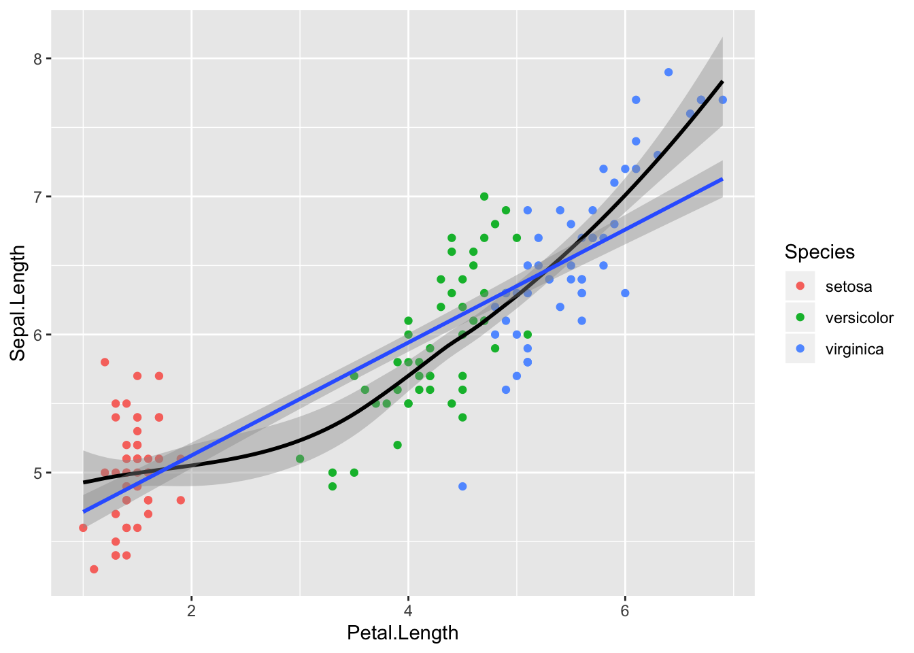
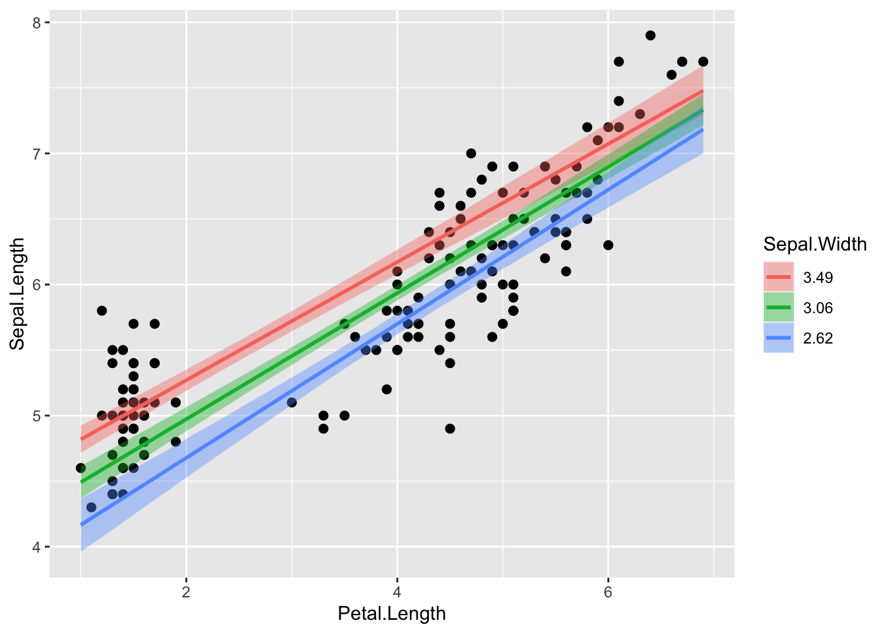

18 brms
brms on populaarne pakett, mis võimaldab kirjutada lihtsas ja lühidas keeles ka üsna keerulisi mudeleid ja need Stan-is fittida. Brms on ühe inimese (Paul Bürkner) projekt (https://github.com/paul-buerkner/brms), mis on jõudnud ette Stani meeskonna arendatavast analoogsest paketist rstanarm (https://github.com/stan-dev/rstanarm/blob/master/README.md). Paul Brükner oli veel mõned aastad tagasi täiesti tavaline psühholoogia doktorant, kes kirjutas brms-i naljaviluks oma doktoriprojekti kõrvalt, mille tulemusel on ta praegu teatud ringkonnis tuntum kui Lady Gaga/Madonna/Pet Shop Boys.
rstanarm, mide me siin ei käsitle, püüab pakkuda tavalisete sageduslikele meetoditele (ANOVA, lineaarne regressioon jne) bayesi analooge, mille mudeli spetsifikatsioon ja väljund erineks võimalikult vähe tavalisest baas-R-i töövoost. Brms on keskendunud mitmetasemelistele mudelitele ja püüab kasutada mudelite keelt, mis on harjumuspärane sageduslike hierarhiliste mudelite fittimise paketi lme4 (https://github.com/lme4/lme4/) kasutajatele.
library(tidyverse)
library(brms)
library(broom)
library(bayesplot)
library(mice)18.1 brms-i töövoog
Modelleerimisel brms-iga on mõned asjad, mida tuleks alati teha, sõltumata sellest, millist mudelit te parajasti fitite. Kõigepealt peaksite kontrollima, et mcmc ahelad on korralikult jooksnud (divergent transitions, rhat ja ahelate visuaalne inspekteerimine). Lisaks peaksite tegema posterioorse prediktiivse plot ja vaatama, millised on mudeli poolt genereeritud uued andmepunktid ja kui palju need meenutavad teie valimit. Samuti peaksite joonisel välja plottima residuaalid.
Kui te inspekteerite fititud parameetrite väärtusi, siis tehke seda tingimata posteeriorite tasemel, k.a. koos veapiiridega. Ja kindlasti tuleks välja plottida mudeli ennustused marginaalplotina, koos usalduspiiridega.
18.1.1 Enne tõsist mudeldamist vaatame sisse irise andmetabelisse
summary(iris)
#> Sepal.Length Sepal.Width Petal.Length Petal.Width
#> Min. :4.30 Min. :2.00 Min. :1.00 Min. :0.1
#> 1st Qu.:5.10 1st Qu.:2.80 1st Qu.:1.60 1st Qu.:0.3
#> Median :5.80 Median :3.00 Median :4.35 Median :1.3
#> Mean :5.84 Mean :3.06 Mean :3.76 Mean :1.2
#> 3rd Qu.:6.40 3rd Qu.:3.30 3rd Qu.:5.10 3rd Qu.:1.8
#> Max. :7.90 Max. :4.40 Max. :6.90 Max. :2.5
#> Species
#> setosa :50
#> versicolor:50
#> virginica :50
#>
#>
#> ggplot(iris, aes(Petal.Length, Sepal.Length)) +
geom_point(aes(color = Species)) +
geom_smooth(method = lm) +
geom_smooth( color = "black", size = 0.5)
Loess fit viitab, et 3 liiki ühe sirgega mudeldada pole võib-olla optimaalne lahendus.
ggplot(iris, aes(Petal.Length, Sepal.Length, color = Species)) +
geom_point() +
geom_smooth(method = lm) +
geom_smooth(data=iris %>% filter(Species =="virginica"),
se = FALSE, color = "black", size = 0.5)+
geom_smooth(data=iris %>% filter(Species =="versicolor"),
se = FALSE, color = "black", size = 0.5)+
geom_smooth(data=iris %>% filter(Species =="setosa"),
se = FALSE, color = "black", size = 0.5)+
theme_classic()
Nüüd on loess ja lm heas kooskõlas - seos y~x vahel oleks nagu enam-vähem lineaarne. Siit tuleb ka välja, et kõigi kolme liigi mudeli tõusud on sarnased, interceptid erinevad.
18.1.2 1. Spetsifitseerime mudeli struktuuri ja vaatame, milliseid prioreid brms tahab defaultina kasutada.
Need on vägagi väheinformatiivsed ja tuleks enamasti informatiivsemate vastu asendada.
get_prior(Sepal.Length~Petal.Length + (1 | Species),
data= iris)
#> prior class coef group resp dpar nlpar bound
#> 1 b
#> 2 b Petal.Length
#> 3 student_t(3, 6, 10) Intercept
#> 4 student_t(3, 0, 10) sd
#> 5 sd Species
#> 6 sd Intercept Species
#> 7 student_t(3, 0, 10) sigmaMe fitime pedagoogilistel kaalutlustel shrinkage mudeli, mis tõmbab 3 liigi intercepte natuke keskmise intercepti suunas. On vaieldav, kas see on irise andmestiku juures mõistlik strateegia, aga me teeme seda siin ikkagi.
18.1.3 2. spetsifitseerime priorid, mida me tegelikult kasutada tahame
prior <- c(prior(normal(6, 3), class = "Intercept"),
prior(normal(0, 1), class ="b"),
prior(cauchy(0, 1), class = "sigma"))Me valime siin nn väheinformariivsed priorid, nii et regressiooni tulemus on suht hästi võrreldav lme4 sagedusliku mudeliga.
See funktsioon trükib välja Stani koodi, mis spetsifitseerib mudeli, mida tegelikult Stanis fittima hakatakse. See on väga hea ressurss, kui tahate õppida otse Stanis mudeleid kirjutama.
make_stancode(Sepal.Length~Petal.Length, data= iris,
prior = prior)18.1.4 3. Jooksutame mudelit oma prioritega ja salvestame mudeli objekti kõvakettale.
Selles mudelis me ennustame muutuja Sepal.Length väärtusi Petal.Length väärtuste põhjal. Ja me teeme seda shrinkage mudelis, kus iga irise liik on oma grupis.
m1 <- brm(Sepal.Length~Petal.Length + (1 | Species),
data= iris,
prior = prior,
family = gaussian,
warmup = 1000,
iter = 2000,
chains = 3,
cores = 3,
control = list(adapt_delta = 0.95))
write_rds(m1, path = "m1.fit")Ainult esimesed 2 argumenti (mudel ja andmed) on kohustuslikud.
argumendid:
family - tõepärafunktsiooni tüüp (y muutujale)
warmup - mitu sammu mcmc ahel astub, enne kui ahelat salvestama hakatakse. tavaliselt on 1000 sammu piisav, et tagada ahelate konvergents. Kui ei ole, tõstke 2000 sammuni.
iter - ahelate sammude arv, mida salvestatakse peale warmup perioodi.
chains - mitu sõltumatut mcmc ahelat jooksutada. 3 on hea selleks, et näha kas ahelad konvergeeruvad. Kui mitte, tuleks muuta parameetreid (lisada informatiivsemaid prioreid tavaliselt) ja uuest proovida
cores - mitu teie arvuti tuuma ahelaid jooksutama panna.
adapt_delta - mida suurem number (max = 1), seda stabiilsemat, ja aeglasemalt, ahelad jooksevad.
m1 <- read_rds("m1.fit")Teine mudel, mis sisaldab veel üht ennustavat muutujat
m2 <- brm(Sepal.Length~Petal.Length + Sepal.Width + (1 | Species),
data= iris,
prior = prior,
family = gaussian,
warmup = 1000,
iter = 2000,
chains = 3,
cores = 4,
control = list(adapt_delta = 0.95))
write_rds(m2, path = "m2.fit")
m2 <- read_rds("m2.fit")m3 paneb kõik liigid ühte patta.
m3 <- brm(Sepal.Length~Petal.Length + Sepal.Width,
data= iris,
prior = prior,
family = gaussian,
warmup = 1000,
iter = 2000,
chains = 3,
cores = 4,
control = list(adapt_delta = 0.95))
write_rds(m3, path = "m3.fit")
m3 <- read_rds("m3.fit")18.1.5 4. Võrdleme mudeleid.
See on abinõu ülefittimise vastu. Mudelite võrdlemisel otsitakse kompromissi - ehk mudeli, mille ennustused oleks andmepunktidele võimalikult lähedal ilma,et see mudel oleks liiga keeruliseks aetud (keerulisus on proportsionaalne mudeli parameetrite arvuga).
Siin me võrdleme 3 mudelit (m1, m2 ja m3). Väikseim looic (leave-one-out information criterion) võidab. See on suhteline võrdlus – looic abs väärtus ei mängi mingit rolli.
loo(m1, m2, m3)Meie puhul on m1 ja m2 mudeli erinevus 25 ühikut ja selle erinevuse standardviga on 10 ühikut. 2 SE-d on umbkaudu 95% usaldusintervall, ja see ei kata antud juhul nulli. Seega järeldame, et m2, mis kasutab ennustamiseks lisamuutujat, on selgelt eelistatud mudel.
Samas mudelid m1 ja m3, mis on üsna erinevad, on võrdselt eelistatud. Selle ennustusjõu, mille me võidame lisaparameetrit mudeldades, kaotame omakorda liike ühte patta pannes (neid mitte osaliselt iseseisvana modelleerides).
Me ei süvene LOOIC statistilisse mõttesse, sest bayesi mudelite võrdlemine on kiiresti arenev ala, kus ühte parimat lahendust pole veel leitud. Meile piisab esialgu teadmisest, et enamus spetsialiste eelistab looic kriteeriumit senikaua, kuni midagi paremat välja mõeldakse.
18.1.6 5. vaatame mudelite kokkuvõtet
Lihtne väljatrükk mudeli m2 fititud koefitsientidest koos 95% usalduspiiridega
tidyMCMC(m2$fit, conf.int = TRUE, conf.method = "HPDinterval",
rhat = TRUE)
#> # A tibble: 8 x 6
#> term estimate std.error conf.low conf.high rhat
#> <chr> <dbl> <dbl> <dbl> <dbl> <dbl>
#> 1 b_Intercept 1.62 0.929 -0.888 3.17 1.01
#> 2 b_Petal.Length 0.758 0.0675 0.622 0.884 1.00
#> 3 b_Sepal.Width 0.441 0.0826 0.284 0.608 1.00
#> 4 sd_Species__Intercept 1.60 1.27 0.175 4.46 1.00
#> 5 sigma 0.313 0.0186 0.277 0.349 1.00
#> 6 r_Species[setosa,Intercept] 0.765 0.909 -1.06 3.02 1.01
#> # ... with 2 more rowsvõi
broom::tidy(m2)r_ prefiks tähendab, et antud koefitsient kuulub mudeli esimesele tasemele (Liigi tase) r- random - tähendab, et iga grupi (liigi) sees arvutatakse oma fit. b_ tähendab mudeli 2. taset (keskmistatud üle kõikide gruppide). 2. tasmel on meil intercept, b1 ja b2 tõusud ning standardhälve y muutuja ennustatud andempunktide tasemel. 1. tasemel on meil 3 liigi interceptide erinevus üldisest b_Intercepti väärtusest. Seega, selleks, et saada setosa liigi intercepti, peame tegema tehte 1.616 + 0.765.
tidy funktsiooni tööd saab kontrollida järgmiste parameetrite abil:
tidy(x, parameters = NA, par_type = c("all",
"non-varying", "varying", "hierarchical"), robust = FALSE,
intervals = TRUE, prob = 0.9, ...)par_type = “hierarchical” kuvab grupi taseme parameetrite sd-d ja korrelatsioonid.
Järgneb brms-i enda mudeli kokkuvõte
m1
#> Warning: There were 7 divergent transitions after warmup. Increasing adapt_delta above 0.95 may help.
#> See http://mc-stan.org/misc/warnings.html#divergent-transitions-after-warmup
#> Family: gaussian
#> Links: mu = identity; sigma = identity
#> Formula: Sepal.Length ~ Petal.Length + (1 | Species)
#> Data: iris (Number of observations: 150)
#> Samples: 3 chains, each with iter = 2000; warmup = 1000; thin = 1;
#> total post-warmup samples = 3000
#>
#> Group-Level Effects:
#> ~Species (Number of levels: 3)
#> Estimate Est.Error l-95% CI u-95% CI Eff.Sample Rhat
#> sd(Intercept) 2.34 1.94 0.62 7.98 579 1.01
#>
#> Population-Level Effects:
#> Estimate Est.Error l-95% CI u-95% CI Eff.Sample Rhat
#> Intercept 2.53 1.26 0.01 5.18 690 1.00
#> Petal.Length 0.89 0.07 0.76 1.02 1707 1.00
#>
#> Family Specific Parameters:
#> Estimate Est.Error l-95% CI u-95% CI Eff.Sample Rhat
#> sigma 0.34 0.02 0.30 0.38 2062 1.00
#>
#> Samples were drawn using sampling(NUTS). For each parameter, Eff.Sample
#> is a crude measure of effective sample size, and Rhat is the potential
#> scale reduction factor on split chains (at convergence, Rhat = 1).Siin on eraldi toodud grupi tasemel ja populatsiooni tasemel koefitsiendid ja gruppide vaheline sd (= 2.34). Pane tähele, et üldine varieeruvus sigma = 0.34 on palju väiksem kui gruppide vaheline varieeruvus sd(Intercept) = 2.34. Seega on grupid üksteisest tugevalt erinevad ja neid tuleks võib-olla eraldi modelleerida.
Eff.Sample näitab efektiivset valimi suurust, mida ahelad on kasutanud. See on suht keeruline mõiste, aga piisab, kui aru saada, et see näitaja ei tohiks olla madalam kui paarkümmend.
Rhat on statistik, mis vaatab ahelate konvergentsi. Kui Rhat > 1.1, siis on kuri karjas. Rhat 1.0 ei tähenda paraku, et võiks rahulikult hingata – tegu on statistikuga, mida saab hästi tõlgendada häda kuulutajana, aga liiga sageli mitte vastupidi.
Divergentsed transitsioonid on halvad asjad - ahelad on läinud 7 korda metsa. Viisakas oleks adapt deltat tõsta või kitsamad priorid panna, aga 7 halba andmepunkti paarist tuhandest, mida mcmc ahelda meile tekitavad, pole ka mingi maailmalõpp. Nii et las praegu jääb nagu on.
18.1.7 6. plotime posteeriorid ja ahelad
See on kvaliteedikontrolli etapp, kus me vaatleme ahelate konvergentsi.
plot(m1)
Siit on näha, et ahelad on ilusti konvergeerunud. Ühtlasi posterioorsed jaotused m1 fititud koefitsientidele.
#regex works!
plot(m1, pars = "r_", theme = theme_dark())
plot(m1, pars = "sig") 
18.1.8 7. korjame ahelad andmeraami ja plotime fititud koefitsiendid CI-dega
model <- m1$fit %>% as.data.frame() mcmc_intervals() on bayesplot paketi funktsioon. me plotime 50% ja 95% CI-d.
pars <- names(model)
pars
#> [1] "b_Intercept" "b_Petal.Length"
#> [3] "sd_Species__Intercept" "sigma"
#> [5] "r_Species[setosa,Intercept]" "r_Species[versicolor,Intercept]"
#> [7] "r_Species[virginica,Intercept]" "lp__"
mcmc_intervals(model, pars=pars[-length(pars)]) #with pars left out the last parameter lp_
Näeme, et sigma hinnang on väga usaldusväärne, samas kui gruppide vahelise sd hinnang ei ole seda mitte (pane tähele posterioorse jaotuse ebasümmeetrilisust).
model2 <- m2$fit %>% as.data.frame()
pars <- names(model2)
mcmc_intervals(model2, pars=pars[-length(pars)])
mcmc_areas(model2, pars=c("b_Petal.Length", "b_Sepal.Width"))

bayesi versioon r-ruudust - kui suurt osa koguvarieeruvusest suudavad mudeli prediktorid seletada
bayes_R2(m2)
#> Estimate Est.Error Q2.5 Q97.5
#> R2 0.86 0.00858 0.84 0.873bayes_R2(m1)
#> Estimate Est.Error Q2.5 Q97.5
#> R2 0.833 0.0112 0.807 0.8518.1.9 8. plotime mudeli poolt ennustatud valimeid - posterior predictive check
Kui mudel suudab genereerida simuleeritud valimeid, mis ei erine väga palju empiirilisest valimist, mille põhjal see mudel fititi, siis võib-olla ei ole see täiesti ebaõnnestunud mudeldamine. See on loogika posterioorse ennustava ploti taga.
gridExtra::grid.arrange(pp_check(m1), pp_check(m2), pp_check(m3), ncol = 3)
y - tihedusplot empiirilistest andmetest y_rep - plotid mudeli poolt ennustatud iseseisvatest valimitest (igaüks sama suur kui empiiriline valim y) Jooniselt on näha, et m3 ennustused on võrreldes m1 ja m2-ga kõige kaugemal tegelikust valimist.
18.1.10 9. plotime mudeli ennustusi - marginal effects plots
teeme ennustused
Kõigepealt ennustame ühe keskmise mudeliga, mis ei arvesta mitmetasemelise mudeli madalamte tasemete koefitsientidega.
plot(marginal_effects(m1, method = "predict", probs=c(0.1, 0.9)), points = TRUE, theme = theme_bw())Ennustus on selles mõttes ok, et vaid väike osa punkte jääb sellest välja, aga laiavõitu teine!
Nüüd ennustame sama mudeli põhjal igale liigile eraldi. Seega kasutame mudeli madalama taseme koefitsiente.
conditions <- data.frame(Species =c("setosa", "virginica", "versicolor"))
plot(marginal_effects(m1, method = "predict", conditions = conditions, probs=c(0.1, 0.9), re_formula = NULL), points = TRUE, theme = theme_bw())method = “predict” ennustab, millisesse vahemikku peaks mudeli järgi jääma 90% andmepunkte (k.a. uued andmepunktid, mida pole veel valimisse korjatud).
Tõesti, valdav enamus valimi punkte on intervallis sees, mis viitab et mudel töötab hästi. Seal, kus on rohkem punkte, on intervall kitsam (mudel on usaldusväärsem).
conditions <- data.frame(Species =c("setosa", "virginica", "versicolor"))
plot(marginal_effects(m1, method = "fitted", conditions = conditions, probs=c(0.1, 0.9), re_formula = NULL), points = TRUE, theme = theme_bw())method = “fitted” annab CI regressioonijoonele.
argumendid:
method - predict annab veapiirid (95% CI) mudeli ennustustustele andmepunkti tasemel. fitted annab veapiirid mudeli fitile endale (joonele, mis tähistab keskmist või kõige tõenäolisemat y muutuja väärtust igal x-i väärtusel)
conditions - andmeraam, kus on kirjas mudeli nendele ennustavatele (x) muutujatele omistatud väärtused, mida ei joonistata x teljele. Kuna meil on selleks mudeli madalama taseme muutuja Species, siis on lisaks vaja määrata argument re_formula = NULL, mis tagab, et ennustuste tegemisel kasutatakse mudeli kõikide tasemete fititud koefitsiente. re_formula = NA annab seevastu keskmise fiti üle kõigi gruppide (irise liikide)
probs annab usaldusintervalli piirid.
Pane tähele, et argumendid points ja theme kuuluvad plot(), mitte marginal_effects() funktsioonile.
Järgneval pildil on method = “fitted”. Nüüd on enamus punkte väljaspool usaldusintervalle, mis sellel pildil mõõdavad meie usaldust regressioonijoone vastu.
conditions <- data.frame(Species =c("setosa", "virginica", "versicolor"))
plot(marginal_effects(m1, method = "fitted", conditions = conditions, probs=c(0.1, 0.9), re_formula = NULL), points = TRUE, theme = theme_bw())
Kui meil on mitme ennustava x muutujaga mudel (nagu m2), siis määrame argumendiga effects, millist neist taheme kasutada x teljel.
conditions <- data.frame(Sepal.Width = mean(iris$Sepal.Width),
Species = c("virginica", "setosa"))
plot(marginal_effects(m2, effects = "Petal.Length", conditions = conditions, re_formula = NULL), points= TRUE)
18.1.10.1 Alternatiivne tee:
Teeme tabeli nende väärtustega, millele tahame mudeli ennustusi. Tabelis newx on spetsifitseeritud mudeli kõikide X muutujate väärtused! Me ennustame Y väärtusi paljudel meie poolt võrdse vahemaaga ette antud petal length väärtustel, kusjuures me hoiame sepal width väärtuse alati konstantsena tema valimi keskmisel väärtusel ja vaatame ennustusi eraldi kahele liigile kolmest. Liigid on mudeli madala taseme osad, seega kasutame ennustuste tegemisel mudeli kõikide tasemete koefitsiente.
newx <- expand.grid(Petal.Length = seq(min(iris$Petal.Length),
max(iris$Petal.Length),
length.out = 150),
Sepal.Width = mean(iris$Sepal.Width),
Species = c("setosa", "virginica")
)expand.grid() lõõb tabeli pikaks nii, et kõik võimalikud kombinatsioonid 3st muutujast on täidetud väärtustega.
reformula NULL mudeldab eraldi liigid eraldi mudeli madalama taseme (liikide sees) koefitsiente kasutades
predict_interval_brms2 <- predict(m2, newdata = newx, re_formula = NULL) %>%
cbind(newx,.)
head(predict_interval_brms2)
#> Petal.Length Sepal.Width Species Estimate Est.Error Q2.5 Q97.5
#> 1 1.00 3.06 setosa 4.48 0.316 3.86 5.11
#> 2 1.04 3.06 setosa 4.53 0.313 3.91 5.16
#> 3 1.08 3.06 setosa 4.56 0.318 3.93 5.18
#> 4 1.12 3.06 setosa 4.56 0.315 3.94 5.17
#> 5 1.16 3.06 setosa 4.61 0.317 3.96 5.23
#> 6 1.20 3.06 setosa 4.62 0.325 3.99 5.28predict() ennustab uusi petal length väärtusi (Estimate veerg) koos usaldusinetrvalliga neile väärtustele
Siin siis eraldi ennustused kahele liigile kolmest, kaasa arvatud petal length väärtusvahemikule, kus selle liigi isendeid valimis ei ole (ja võib-olla ei saagi olla)
iris1 <- iris %>% filter(Species != "versicolor")
ggplot(data = predict_interval_brms2, aes(x = Petal.Length, y = Estimate)) +
geom_point(data= iris1, aes(Petal.Length, Sepal.Length, color=Species)) +
geom_line(aes(color = Species)) +
geom_ribbon(aes(ymin = Q2.5, ymax = Q97.5, fill = Species), alpha = .1, colour = NA) +
scale_color_brewer(palette = 'Set1') +
ggthemes::theme_tufte()
Sama, aga nüüd plotime usaldusintervalli mudeli fitile (keskmisele Y väärtusele igal määratud X-i väärtusel), mitte Y- ennustusele andmepunkti kaupa. Selleks on hea fitted() funktsioon. Me ennustame m2 mudelist vastavalt newdata parameetriväärtustele. Kui me newdata argumendi tühjaks jätame, siis võtab fitted() selleks automaatselt algse iris tabeli (ehk valimi väärtused).
predict_interval_brms2f <- fitted(m2, newdata = newx, re_formula = NULL) %>%
cbind(newx,.)
head(predict_interval_brms2f)
#> Petal.Length Sepal.Width Species Estimate Est.Error Q2.5 Q97.5
#> 1 1.00 3.06 setosa 4.49 0.0560 4.38 4.60
#> 2 1.04 3.06 setosa 4.52 0.0551 4.41 4.62
#> 3 1.08 3.06 setosa 4.55 0.0543 4.44 4.65
#> 4 1.12 3.06 setosa 4.58 0.0537 4.47 4.68
#> 5 1.16 3.06 setosa 4.61 0.0531 4.50 4.71
#> 6 1.20 3.06 setosa 4.64 0.0527 4.54 4.74ggplot(data = predict_interval_brms2f, aes(x = Petal.Length, y = Estimate, color = Species)) +
geom_point(data= iris1, aes(Petal.Length, Sepal.Length, color=Species)) +
geom_line() +
geom_ribbon(aes(ymin = Q2.5, ymax = Q97.5, fill = Species), alpha = .1, colour = NA) +
scale_x_continuous(breaks = 0:10) +
theme(panel.grid.minor = element_blank()) +
scale_color_brewer(palette = 'Set1')+
ggthemes::theme_tufte()
mudeli genereeritud andmed ja valimiandmed mõõtmisobjekti (subjekti e taimeisendi) kaupa. See on sisuliselt posterior predictive plot (vt eespool).
predict_subjects_brms <- predict(m2) %>% cbind(iris, .)
#ennustame andmeid igale taimele vastavate parameetriväärtustega
#ja paneme ennustused kokku algse irise tabeligapredict() arvutab mudeli põhjal uusi Y muutuja andmepunkte. Võib kasutada ka väljamõeldud andmete pealt Y väärtuste ennustamiseks (selleks tuleb anda ette andmeraam kõigi X-muutujate väärtustega, mille pealt tahetakse ennustusi).
tugevalt värvitud punktid on ennustused ja läbipastvad punktid on valimiandmed
ggplot(data = predict_subjects_brms, aes(Petal.Length, Estimate, color = Species)) +
geom_point(aes(Petal.Length, Estimate), alpha = .8)+
geom_point(data = iris, aes(Petal.Length, Sepal.Length), alpha = .3)+
ggthemes::theme_tufte()
18.2 9. plotime residuaalid
resid() annab residuaalid vektorina. Kõigepealt plotime residuaalid fititud (keskmiste) Y väärtuste vastu.
resid <- resid(m2, type = "pearson")[, "Estimate"]
fit <- fitted(m2)[, "Estimate"]
ggplot() + geom_point(data = NULL, aes(y = resid, x = fit))
vaatame diagnostilist plotti autokorrelatsioonist residuaalide vahel.
plot(acf(resid))
Kõik paistab OK.
siin on residuaalide histogramm
ggplot(data = NULL, aes(resid)) + geom_density(fill="lightgrey") + geom_vline(xintercept = median(resid), linetype ="dashed")+ theme_classic()
Residuaalid on sümmeetrilise jaotusega ja meedian residuaal on peaaegu null. See on kõik hea.
Ja lõpuks plotime residuaalid kõigi x-muutujate vastu:
Kõigepealt ühendame resid vektori irise tabeliga, et oleks mugavam plottida, seejärel tekitame uue veeru st_resid e studentiseeritud residuaalid, mis on sd ühikutes.
residuaalid standardhälbe ühikutes (nn Studentiseeritud residuaalid) saab ja ka tuleks plottida kõigi x-muutujate suhtes.
iris2 <- iris %>% cbind(resid) %>% mutate(st_resid= resid/sd(resid))
ggplot(iris2, aes(Petal.Length, st_resid, color=Species))+
geom_point() +
geom_hline(yintercept = 0, linetype = "dashed") +
ggthemes::theme_tufte()
Pole paha, mudel ennustab hästi, aga mõne punkti jaoks on ennustus 2 sd kaugusel.
ggplot(iris2, aes(Sepal.Width, st_resid, color=Species))+
geom_point() +
geom_hline(yintercept = 0, linetype = "dashed") +
ggthemes::theme_tufte()
ggplot(iris2, aes(Species, st_resid)) + geom_boxplot() +
geom_hline(yintercept = 0, linetype = "dashed") +
geom_jitter(width = 0.1, size=0.4)+
ggthemes::theme_tufte()
18.2.1 puuduvate andmete imputatsioon
Eriti vajalik, kui andmed ei puudu juhuslikult!
data("nhanes", package = "mice")
head(nhanes)
#> age bmi hyp chl
#> 1 1 NA NA NA
#> 2 2 22.7 1 187
#> 3 1 NA 1 187
#> 4 3 NA NA NA
#> 5 1 20.4 1 113
#> 6 3 NA NA 184imputeerime enne mudeli fittimist kasutades multiple imputation meetodit mice paketist. Siin imputeerime iga puuduva väärtuse kasutades kõigi teiste parameetrite väärtusi, ja me teeme seda 5 korda.
library(mice)
imp <- mice(nhanes, m = 5, print = FALSE)Meil on nüüd 5 imputeeritud andmesetti. Me saadame need kõik brms-i
fit_imp1 <- brm_multiple(bmi ~ age*chl, data = imp, chains = 2)Saame tavalise fitiobjekti, kus on 5 alammudeli posterioorid. Kõik juba koos.
18.3 brms mudelite süntaks
üldine vorm:
response ~ pterms + (gterms | group)
- kasuta g1:g2 või g1/g2, kui nii g1 kui g2 on sobilikud grupeerivad faktorid.
- operaator loob uue grupeeriva faktori, mis kombineerib g1 ja g2 tasemed.
/ operaator viitab nested struktuurile (kool - koolitüüp)
(1 | g1/g2), tähendab tegelikult (1 | g1) + (1 | g1:g2).
(1 | g1 + g2) on sama, mis (1 | g1) + (1 | g2).
|| kasutades (x || g1) ei modelleeri me grupi-taseme korrelatsioone. See on hea, kui mudeli fittimine muidu ei tööta.
kuidas mudeldada sama grupeeriva faktori korrelatsioone üle mitme regressioonivõrrandi? Selleks laiendame | operaatori |
alternatiivseid grupeeivaid struktuure saab väljendada nii:
(gterms | fun(group)).
Hetkel on meil 2 sellist fun-i: gr() annab default käitumise ja mm() annab multi-membership termid. Näiteks brm(y ~ 1 + (1 | mm(s1, s2)) modelleerib seda, kuidas lapsed võivad õppida kahes koolis (s1 ja s2) eri aegadel
gr() lisatakse muidu automaatselt, aga seda spetsifitseerides saab kirjutada
y ~ x + (1|gr(g1, by = g2)), mis tähendab, et grupeeriva muutja g1 sees lahutatakse veel gruppidesse g2 muutuja tasemete järgi - ja iga g2 grupp modelleeritakse iseseisvalt (ilma shrinkageta)
Mittelineaarne mudel:
y = b1(1 − exp(−(x/b2)**b3 )
y ja x seos parameetritega b1..b3 Oletame, et tahame kõik parameetrid fittida grupeeriva muutuja g tasemete järgi ja et grupi tasmel efektid oleks omavahel korreleeritud. Lisaks ennustame me b1-e kovariaat z järgi. See kõik läheb järgmisesse võrrandisüsteemi kus, lisaks mitte-lineaarsele võrrandile, igale parameetrile b1…b3 vastab oma lineaarne võrrand:
y ~ b1 * (1 - exp(-(x / b2) ^ b3) b1 ~ z + (1|ID|g) b2 ~ (1|ID|g) b3 ~ (1|ID|g)
lisaks on mudeli keeles silumistermid s() ehk spline ja t2() ehk bivariate tensor spline, mis tulevad mgcv paketist. Näiteks rentsqm ~ t2(area, yearc) + (1|district)
category specific effects cs,
monotonic effects mo,
noise-free effects me, or
Gaussian process terms gp.
additional information on the response variable may be specified via response | aterms ~ <predictor terms>. The aterms part may contain multiple terms of the form fun(
18.4 Näited brms mudeliklassidest
18.5 distributsioonilised mudelid
18.5.1 erinevad varieeruvused
Tavaliselt me eeldame, et prediktormuutujate väärtustest sõltub ainult ennustatava muutuja keskmine, aga mitte varieeruvus. Siin me ei eelda seda.
2 gruppi patsiente, platseebogrupil madalam varieeruvus
group <- rep(c("treat", "placebo"), each = 30)
symptom_post <- c(rnorm(30, mean = 1, sd = 2), rnorm(30, mean = 0, sd = 1))
dat1 <- data.frame(group, symptom_post)bf() abil saame hinnata nii y keskmise kui sd
fit1 <- brm(bf(symptom_post ~ group, sigma ~ group),
data = dat1, family = gaussian())
write_rds(fit1, path = "fit1.fit")fit1 <- read_rds("fit1.fit")tidyMCMC(fit1$fit, conf.int = TRUE, conf.method = "HPDinterval",
rhat = TRUE)
#> # A tibble: 4 x 6
#> term estimate std.error conf.low conf.high rhat
#> <chr> <dbl> <dbl> <dbl> <dbl> <dbl>
#> 1 b_Intercept -0.205 0.217 -0.638 0.225 0.999
#> 2 b_sigma_Intercept 0.147 0.131 -0.109 0.398 1.000
#> 3 b_grouptreat 1.32 0.454 0.391 2.17 0.999
#> 4 b_sigma_grouptreat 0.607 0.190 0.238 0.977 1.000Sigma_grouptreat võrdleb log-skaalas kahe grupi sd-d ja näitab, et varieeruvused on tõesti erinevad.
marginal effect plot kinnitab seda.
plot(marginal_effects(fit1), points = TRUE)
nüüd arvutamw residuaalsed sd-d algses skaalas
hyp <- c("exp(sigma_Intercept) = 0",
"exp(sigma_Intercept + sigma_grouptreat) = 0")
hypothesis(fit1, hyp)
#> Hypothesis Tests for class b:
#> Hypothesis Estimate Est.Error CI.Lower CI.Upper Evid.Ratio
#> 1 (exp(sigma_Interc... = 0 1.17 0.16 0.91 1.52 NA
#> 2 (exp(sigma_Interc... = 0 2.15 0.29 1.66 2.82 NA
#> Post.Prob Star
#> 1 NA *
#> 2 NA *
#> ---
#> '*': The expected value under the hypothesis lies outside the 95%-CI.
#> Posterior probabilities of point hypotheses assume equal prior probabilities.Võrdleme neid otse ja plotime posteeriori sd-de erinevusele
hyp <- "exp(sigma_Intercept + sigma_grouptreat) > exp(sigma_Intercept)"
(hyp <- hypothesis(fit1, hyp))
#> Hypothesis Tests for class b:
#> Hypothesis Estimate Est.Error CI.Lower CI.Upper Evid.Ratio
#> 1 (exp(sigma_Interc... > 0 0.98 0.34 0.47 Inf 1999
#> Post.Prob Star
#> 1 1 *
#> ---
#> '*': The expected value under the hypothesis lies outside the 95%-CI.
#> Posterior probabilities of point hypotheses assume equal prior probabilities.plot(hyp, chars = NULL)
18.5.2 zero inflated mudelid
Kasulikud siis, kui teil on Y-s rohkem nulle kui võiks arvata. Näiteks, kui proovida hinnata, mitu suitsu päevas tõmmatakse andmestikust, mis sisaldab mittesuitsetajaid.
selle mudeli spetsifitseerimiseks pole vaja teha muud, kui õelda brm() argument family = zero_inflated_poisson(), zero_inflated_beta(), _binomial(), _negbinomial().
zinb data: mitu kala turist püüab.
zinb <- read_csv("http://stats.idre.ucla.edu/stat/data/fish.csv")
zinb
#> # A tibble: 250 x 8
#> nofish livebait camper persons child xb zg count
#> <int> <int> <int> <int> <int> <dbl> <dbl> <int>
#> 1 1 0 0 1 0 -0.896 3.05 0
#> 2 0 1 1 1 0 -0.558 1.75 0
#> 3 0 1 0 1 0 -0.402 0.280 0
#> 4 0 1 1 2 1 -0.956 -0.602 0
#> 5 0 1 0 1 0 0.437 0.528 1
#> 6 0 1 1 4 2 1.39 -0.708 0
#> # ... with 244 more rowsbrm(count ~ persons + child + camper,
data = zinb, family = zero_inflated_poisson())sellel mudelil on parameeter zi ehk zero inflated probability, mille väärtus annab infleeritud 0-de suhte kõikidesse 0-desse,
järgmiseks püüame veel lisaks ennustada zi väärtust lähtuvalt laste arvust (lastega pered võiks vähem kalastada)
brm(bf(count ~ persons + child + camper,
zi ~ child), data = zinb, family = zero_inflated_poisson())
#> Family: zero_inflated_poisson
#> Links: mu = log; zi = logit
#> Formula: count ~ persons + child + camper
#> zi ~ child
#> Data: zinb (Number of observations: 250)
#> Samples: 4 chains, each with iter = 2000; warmup = 1000; thin = 1;
#> total post-warmup samples = 4000
#>
#> Population-Level Effects:
#> Estimate Est.Error l-95% CI u-95% CI Eff.Sample Rhat
#> Intercept -1.08 0.18 -1.44 -0.72 3054 1.00
#> zi_Intercept -0.96 0.26 -1.53 -0.51 3214 1.00
#> persons 0.89 0.05 0.80 0.98 3082 1.00
#> child -1.17 0.10 -1.37 -0.99 2440 1.00
#> camper 0.77 0.09 0.60 0.96 3841 1.00
#> zi_child 1.22 0.27 0.73 1.78 3212 1.00
#>
#> Samples were drawn using sampling(NUTS). For each parameter, Eff.Sample
#> is a crude measure of effective sample size, and Rhat is the potential
#> scale reduction factor on split chains (at convergence, Rhat = 1).Nüüd on meil parameetrid zi_Intercept ja zi_child
18.5.3 additiivsed distributsioonilised mudelid
inkirporeerime splinid multitaseme mudelisse - siis kui me ei tea y ja x-i suhete kuju.
simuleerime andmed
dat_smooth <- mgcv::gamSim(eg = 6, n = 200, scale = 2, verbose = FALSE)
#> Gu & Wahba 4 term additive modelhead(dat_smooth[, 1:6])
#> y x0 x1 x2 x3 f
#> 1 8.06 0.109 0.500 0.6155 0.941 9.66
#> 2 9.45 0.337 0.271 0.0879 0.142 12.17
#> 3 13.32 0.457 0.919 0.0590 0.135 18.38
#> 4 18.52 0.492 0.534 0.0462 0.626 17.52
#> 5 7.46 0.265 0.633 0.9467 0.603 8.02
#> 6 14.30 0.717 0.697 0.7534 0.887 13.59x0 kuni x3 on prediktorid, fac on faktor veerg, mis indikeerib nested andmestruktuuri. me ennustame y väärtusi x0 ja x1 järgi, ja lisaks laseme residuaalse sd varieeruma x0 smoothing termi ja fac gruppide interceptide järgi.
fit_smooth1 <- brm(
bf(y ~ s(x1) + s(x2) + (1|fac), sigma ~ s(x0) + (1|fac)),
data = dat_smooth, family = gaussian()
)
#> Warning: There were 17 divergent transitions after warmup. Increasing adapt_delta above 0.8 may help. See
#> http://mc-stan.org/misc/warnings.html#divergent-transitions-after-warmup
#> Warning: Examine the pairs() plot to diagnose sampling problems18.6 Monotoonilised efektid
näit prediktor muutuja: suitsetab palju - vähe - väga vähe. me ei eelda, et 3 taset oleks üksteisest sama kaugel - ei modelleeri seda pideva muutujana.
fit1 <- brm(y ~ mo(x), data = d)nüüd tekivad meile Simplex parameetrid. Nende prior on kanooniliselt ühe parameetriga (alpha) Dirichlet prior, mis on beta jaotuse multivariaatne üldistus.
siin me eeldame, et kõrvuti kategooriate erinevused on samad - e lähevad sama priori alla. Kui me eeldame, et meil on näit 3 järjestikust monotoonilist taset ja, et madalatel väärtustel (1) on monotoonilise muutuja mõju Y-le suurem, siis anname alphale kõrgema väärtuse. Meie kolemses näites on vaja spetsifitseerida vektor 3 alpha-ga.
prior <- prior(dirichlet(c(2, 1, 1)), class = "...", coef = "...")
fit4 <- brm(y ~ mo(x), data = d,
prior = prior, sample_prior = TRUE)monotooniliste muutujate interaktsiooni mudeldamine
fit5 <- brm(y ~ mo(x)*age, data = d)
marginal_effects(fit5, "x:age")mitmetasemelised monotoonilised mudelid
fit6 <- brm(y ~ mo(x)*age + (mo(x) | city), data = d)18.6.1 multivariaatsed mudelid
mitu y muutujat, millel igaühel on oma prediktorid.
Eurasian blue tit: predict the tarsus length as well as the back color of chicks. Half of the brood were put into another fosternest, while the other half stayed in the fosternest of their own dam. This allows to separate genetic from environmental factors. Additionally, we have information about the hatchdate and sex of the chicks (the latter being known for 94% of the animals).
data("BTdata", package = "MCMCglmm")
head(BTdata)fit1 <- brm(
cbind(tarsus, back) ~ sex + hatchdate + (1|p|fosternest) + (1|q|dam),
data = BTdata, chains = 2, cores = 2
)
add_ic(fit1) <- "loo"
summary(fit1)
pp_check(fit1, resp = "tarsus")
pp_check(fit1, resp = "back")The term (1|p|fosternest) indicates a varying intercept over fosternest. By writing |p| in between we indicate that all varying effects of fosternest should be modeled as correlated. This makes sense since we actually have two model parts, one for tarsus and one for back. The indicator p is arbitrary and can be replaced by other symbols that comes into your mind. Similarily, the term (1|q|dam) indicates correlated varying effects of the genetic mother of the chicks.
The summary output of multivariate models closely resembles those of univariate models, except that the parameters now have the corresponding response variable as prefix. Within dams, tarsus length and back color seem to be negatively correlated, while within fosternests the opposite is true. This indicates differential effects of genetic and environmental factors on these two characteristics. Further, the small residual correlation rescor(tarsus, back) on the bottom of the output indicates that there is little unmodeled dependency between tarsus length and back color. Although not necessary at this point, we have already computed and stored the LOO information criterion of fit1, which we will use for model comparisons.
Me võime anda ette erinevad valemid kummagile y-muutujale nii
bf_tarsus <- bf(tarsus ~ sex + (1|p|fosternest) + (1|q|dam))
bf_back <- bf(back ~ hatchdate + (1|p|fosternest) + (1|q|dam))
fit2 <- brm(bf_tarsus + bf_back, data = BTdata, chains = 2, cores = 2)We change our model in various directions at the same time. Remember the slight left skewness of tarsus, which we will now model by using the skew_normal family instead of the gaussian family. Since we do not have a multivariate normal (or student-t) model, estimating residual correlations is no longer possible. We make this explicit using the set_rescor function. We investigate if the relationship of back and hatchdate is really linear as previously assumed by fitting a non-linear spline of hatchdate. On top of it, we model separate residual variances of tarsus for males and femals chicks.
bf_tarsus <- bf(tarsus ~ sex + (1|p|fosternest) + (1|q|dam)) +
lf(sigma ~ 0 + sex) + skew_normal()
bf_back <- bf(back ~ s(hatchdate) + (1|p|fosternest) + (1|q|dam)) +
gaussian()
fit3 <- brm(bf_tarsus + bf_back + set_rescor(FALSE), data = BTdata)18.6.2 mittelineaarsed mudelid
b <- c(2, 0.75)
x <- rnorm(100)
y <- rnorm(100, mean = b[1] * exp(b[2] * x))
dat1 <- data.frame(x, y)
prior1 <- prior(normal(1, 2), nlpar = "b1") +
prior(normal(0, 2), nlpar = "b2")
fit1 <- brm(bf(y ~ b1 * exp(b2 * x), b1 + b2 ~ 1, nl = TRUE),
data = dat1, prior = prior1)Siin on iga mittelineaarne parameeter (b1 ja b2) eraldi modelleeritud ~1 abil. Argument b1 + b2 ~ 1 (lühivorm: b1 ~ 1, b2 ~ 1) ütleb, mis muutujad valemist on parameetrid, mille väärtust tuleb hinnata. Lisaks spetsifitseerib see igale parameetrile lineaarsed prediktorid. Mitte-lineaarsed parameetrid on tegelikult kohahoidjad lineaarsetele prediktor-termidele. Kuna me siin ei ennusta b1 ja b2 lisaparameetrite kaudu, on meil intercept-only mudel kummagile.
Priors on population-level parameters (i.e., ‘fixed effects’) are often mandatory to identify a non-linear model. Thus, brms requires the user to explicitely specify these priors. In the present example, we used a normal(1, 2) prior on (the population-level intercept of) b1, while we used a normal(0, 2) prior on (the population-level intercept of) b2. Setting priors is a non-trivial task in all kinds of models, especially in non-linear models, so you should always invest some time to think of appropriate priors. Quite often, you may be forced to change your priors after fitting a non-linear model for the first time, when you observe different MCMC chains converging to different posterior regions. This is a clear sign of an idenfication problem and one solution is to set stronger (i.e., more narrow) priors.